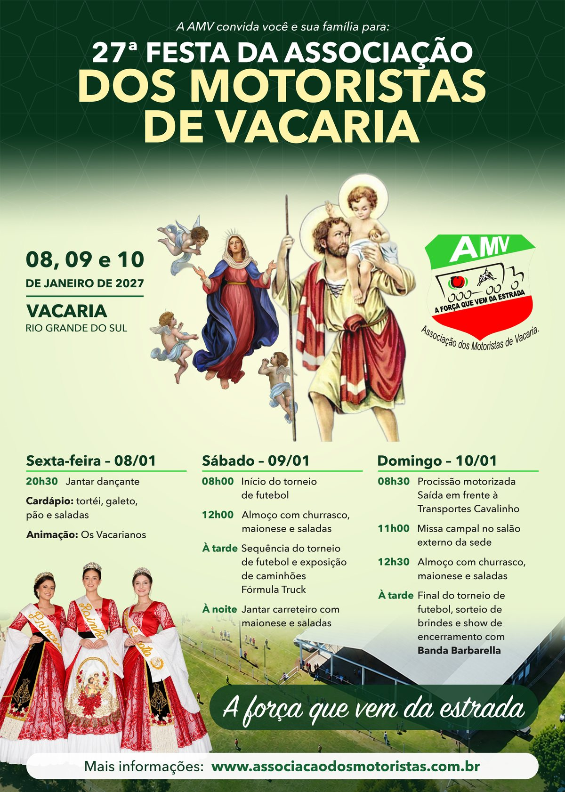

Próximos Eventos
27ª Festa da Associação dos Motoristas de Vacaria
08, 09 e 10 de janeiro de 2027 (sexta, sábado e domingo)
Vacaria – Rio Grande do Sul
"A força que vem da estrada"

PROGRAMAÇÃO
Sexta-feira – 08/01/2027
- 20h30 – Jantar dançante
- Cardápio: tortéi, galeto, pão e saladas
- Animação: Os Vacarianos
Sábado – 09/01/2027
- 08h00 – Início do torneio de futebol
- 12h00 – Almoço com churrasco, maionese e saladas
- À tarde – Sequência do torneio de futebol e exposição de caminhões Fórmula Truck
- À noite – Jantar carreteiro com maionese e saladas
Domingo – 10/01/2027
- 08h30 – Procissão motorizada (saída em frente à Transportes Cavalinho)
- 11h00 – Missa campal no salão externo da sede
- 12h30 – Almoço com churrasco, maionese e saladas
- À tarde – Final do torneio de futebol, sorteio de brindes e show de encerramento com Banda Barbarella
Eventos Passados
26ª Festa dos Motoristas – Vacaria/RS
09, 10 e 11 de Janeiro de 2026
PROGRAMAÇÃO
Sexta-feira – 09/01
- 20h30 – Jantar Dançante
- Cardápio: Tortéi, galeto, pão e saladas
- Animação: Banda Montagem
Sábado – 10/01
- 08h00 – Início do Torneio de Futebol
- 12h00 – Almoço (Churrasco e Saladas)
- 14h00 – Início do Torneio de Voleibol
- À noite – Tradicional Carreteiro
Domingo – 11/01
- 08h30 – Procissão Motorizada (saída em frente à Trans Cavalinho)
- 11h00 – Missa Campal
- 12h00 – Almoço (Churrasco)
- À tarde – Finais dos Torneios de Futebol e Voleibol
- Encerramento com as bandas Fole Gaúcho e Banda Hellige
06/09/2025 – Escolha da Rainha na sede da Associação
Evento Realizado